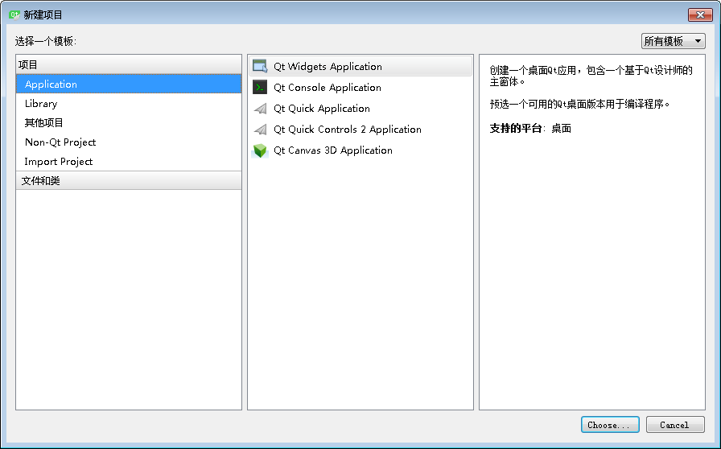
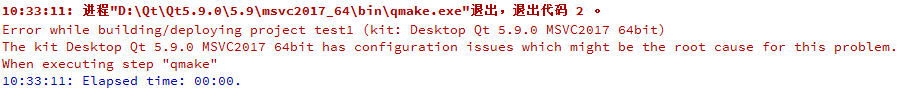
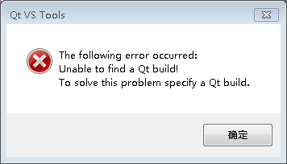
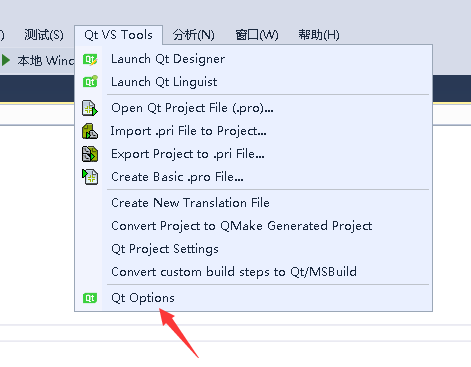
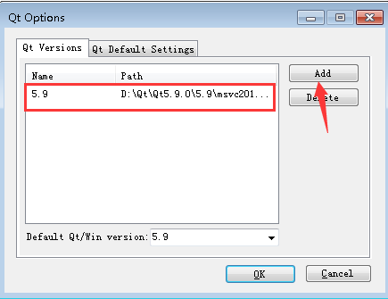

Qt学习1
文章目录
Qt比较出名的应该是它的跨平台能力，刚好我在不同地方用的系统也不一样，包括Windows、Linux(UOS)，Mac，所以截图也可能是3个系统随机的截图。
安装
先下载，地址：https://download.qt.io，我下载的是5.9的版本，使用 vs 开发的话，还需要安装插件，地址：https://download.qt.io/official_releases/vsaddin/。这个 Qt 的官方下载网站可能正常访问会有点慢，可以上网找些第三方源去下载一下。
安装3个平台都没什么问题。Linux上可能需要安装一下依赖sudo apt-get install libgl1-mesa-dev g++ make gdb ，gdb记得装上，因为是个新系统，没安装过gdb，没装导致在 Qt Creator 提示调试器未设置，没法调试程序。我是把source（源码）都装上，方便以后学习。Windows下，designer.exe是QT的设计器，assistant.exe是QT的文档
初次使用
3个平台都能使用 Qt Creator 来进去Qt程序的开发，在 Windows 平台下，还能用宇宙第一IDE vs来开发Qt，我以前工作用的都是 vs，所以对 vs 可谓相当熟悉，可能之后会用 vs 来继续学习Qt比较多。
考虑到项目可能是跨平台的，文件名大小写在 Windows不敏感，Unix 系的敏感，将文件名统一为小写跨平台时可以避免不必要的麻烦。
QtCreator使用
使用QTCreater创建项目：

第一个是带界面的程序，第二个是控制台。
生成项目后，有几个特殊的文件：
-
.pro 用来配置项目。
-
.ui 界面配置文件，和界面编辑器联动。
-
pro.user 编译环境配置文件，如果有编译错误，可以尝试把这个文件删掉让它重新生成,因为每个人这个配置可能不一样，所以上传代码的时候可以删掉。
遇到的问题

在Windows下编译项目出现图上的错误，后来发现是路径有中文导致的，换回英文路径一切正常。
Visual Studio使用
在 vs 中使用需要安装插件，安装完后，在新建项目时 Visual C++ 下的 测试中便能看到Qt的项目，我看别人是单独有一项Qt的列表项，不知为什么我的Qt项目都在测试里面：
这时候创建好项目，编译项目会出错：

原因是还要设置 qmake 的路径，在下图的位置添加上 qmake.exe 的路径：


现在应该就能正常使用 vs 编译 Qt的项目了。
文章作者 hao
上次更新 2020-08-06